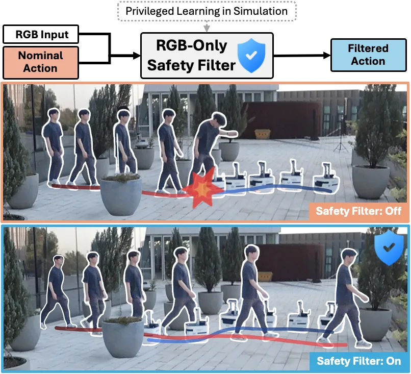
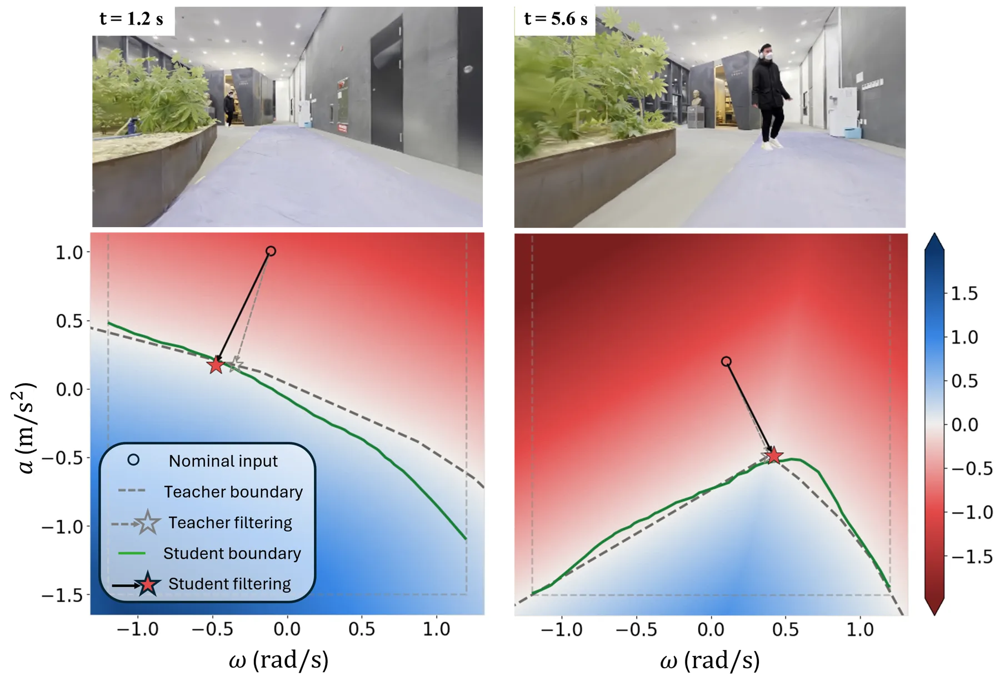
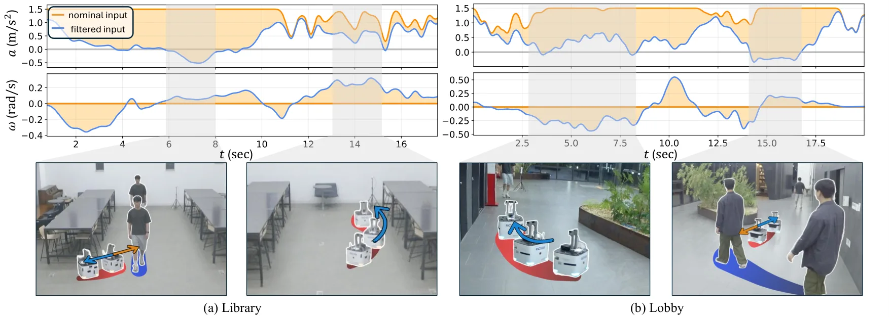

把特权控制屏障函数蒸馏成 RGB-only 安全滤波器用于动态视觉导航
Distilling Privileged Control Barrier Functions into RGB-Only Safety Filters for Dynamic Visual Navigation
把在动态高斯泼溅仿真里用真值状态的特权 CBF 教师，蒸馏成只用 RGB 历史+速度+名义动作的学生安全滤波器；仿真成功率 74.0%/无碰撞率 86.1%（教师 76.8%/91.5%，未加滤波 48.9%/53.0%），真机 180 回合验证，机载 9.2 ms/次。
SR/CFR
collision
latency
episodes
作者、单位与技术谱系 · Research context
作者与单位
研究脉络
- CBF-QP（Ames et al., 2016）方法基座关系：教师的数学形式直接建立在控制屏障函数二次规划上。[论文第 III 节与参考[2]]
- 视觉 CBF（V-CBF、SAFER-Splat、NeRF-CBF）上游方向关系：作为对照的视觉安全滤波基线，依赖渲染或显式 3D 表示、面向静态场景。[论文第 VI-A 节]
- Mono-camera target chasing（Yoo et al., 2024）团队前作关系：同组此前用跨模态学习做单目无人机目标追踪，本篇延续『从 RGB 学安全/追目标』的路线。[论文参考文献[29]]
合作网络
- 首尔大学内部合作署名Seungyeon Yoo（共同第一作者） → H. Jin Kim（作者群）关系：共同署名[arXiv 首页署名]
- 首尔大学 ↔ UC Berkeley首尔大学航空航天工程系 → UC Berkeley关系：共同署名[arXiv 首页署名]
- 官方项目页论文作者 → distill-cbf 项目页关系：官方项目页[论文摘要]
作者与单位取自 arXiv 首页署名；脉络依据论文引用与自述；未推断导师/师生关系。
方法本质拆解 · What actually changed
是不是微调？
学生是从头训练的小型网络（每场景约 1.5M→12M 转移、单张 A6000 训练），教师不是神经网络而是 CBF-QP 求解器、无需训练。因此可变权重只有学生滤波器；教师只提供标签，属特权监督蒸馏。
有没有额外约束？
额外约束有三处：教师侧对行人速度加不确定性收紧裕度；教师只用学生 RGB 历史可观测的障碍物构造约束以匹配信息集；学生侧加「行人在视场内」的辅助分类头作为观测一致性监督。约束作用在 CBF 屏障函数与学生的动作回归目标上。
推理/后端到底做了什么？
部署时学生只做一次前向：输入短 RGB 历史+机器人速度+名义动作，输出安全动作，不建 3D 表示、不实时渲染、不做轨迹采样搜索，机载 9.2 ms/次。无全局优化、无因子图；它是把安全层的计算全部摊销进训练。
方法本质是什么？
本质是把「不可得的特权状态」转化为「可得的 RGB 历史」上的监督：教师用真值求解唯一且连续的安全动作，学生用数据逼近这一个映射，从而在部署时免除状态估计与场景重建。它没有做的是跨场景统一单滤波器（每场景单训），也没解决超时与保守性。
输入为短 RGB 历史+机器人速度+名义动作；改变的位置是安全层由在线 CBF-QP 换成 RGB-only 学习滤波器；约束/合并动作是特权状态监督+速度不确定性裕度+动作增强；直接效果是机载无重建完成动态避障并显著降低动态碰撞。

动机与问题Motivation
动机与问题
已有视觉 CBF 方法在测试时要么实时渲染、要么维护显式 3D 场景表示，因而暴露在重建伪影下，且其屏障多为静态场景设计、没有障碍物速度概念。NeRF-CBF 还依赖对扰动动作的采样搜索，候选全不过时直接停车，在移动行人附近会丧失推进能力。论文要问的是：能否用只在仿真里可得、真实部署不可得的特权状态（障碍物真值位置与速度）来监督一个部署时只需 RGB 的安全层。
方法Method
方法总览
系统分师生两侧：教师在动态高斯泼溅仿真里用机器人/障碍物真值状态求解 CBF-QP，产生安全动作；学生输入短 RGB 历史、机器人速度与名义策略动作，直接回归安全动作。为缩小信息差，教师只用「学生 RGB 历史中可观测」的障碍物构造约束，并对行人速度加不确定性裕度；训练数据由三种名义策略各自的 rollout 与教师滤波 rollout 组成。为覆盖名义动作空间，对 CBF-QP 标签做动作增强，学生单场景约 1.5M 转移、增强后约 12M。
关键技术细节
教师侧在 CBF-QP 中额外加不确定性裕度：不只用估计的行人速度，而是在速度上收紧屏障，使行人在离开视场后变速/变向时滤波器仍有反应时间。学生侧加一个辅助头从图像特征预测「行人是否在相机视场内」，作为观测一致性的监督；并把三种名义策略的数据并成 Mixed 训练集以提升跨策略迁移。论文还定义学生的干预边界（动作修正范数 < ε=0.05 视为未修改），用来与教师 CBF 约束的零水平集做边界比对。

实验Experiments
实验设置
任务为单前向 RGB 相机的轮式机器人，环境含静态障碍与一名移动行人，覆盖 Outside、Lobby、Library 三个场景与 IL、RL、ViNT 三种名义策略。指标为成功率 SR、无碰撞率 CFR、安全裕度 m̄、耗时 TT 与失败类型（静态碰撞 S / 动态碰撞 D / 超时 TO）。真机 180 回合（每个 名义-滤波-场景 组合 10 回合），由 5 名未出现在训练数据中的行人充当动态障碍；机载为 Jetson Orin NX + ZED2 相机。
实验数字与比较
仿真总体（论文表 II）：未滤波 SR/CFR 48.9%/53.0%；教师 76.8%/91.5%；学生 74.0%/86.1%；失败率 S/D/TO 学生为 3.1/10.8/12.1（未滤波为 25.4/21.6/4.1），说明收益主要来自大幅降低动态碰撞。真机（论文表 IV，示例）：IL 策略 Outside 场景 SR 30→50、CFR 40→80；RL 策略 Library 场景 SR 50→70、CFR 50→70；ViNT 策略 Outside CFR 40→80。不确定性裕度消融（论文表 II）：去掉裕度把行人碰撞从 7.3% 抬到 12.1%（教师）、从 10.8% 抬到 15.3%（学生）。
消融/失败边界
数据配方消融（论文表 III）：Mixed（合并三策略数据）或动作增强单独使用，相对「单策略、无增强」学生都不提升；两者合用才把 SR/CFR 提到 74.0%/86.1%，作者据此称二者互补。不确定性裕度消融：去掉后静态碰撞与超时略降、但动态碰撞显著上升，说明裕度是「以少量保守换动态安全」。失败边界：真机结果显示滤波偶尔增加超时失败——因为在拥挤区域降速，作者明确承认这是安全与推进的取舍；单场景训练、跨场景泛化仍是未解问题。
局限与迁移Limitations & Transfer
局限与待核验
作者明确承认：滤波器在密集区域会因降速而增加超时；真机上 static/dynamic 失败并未全部消除；结论建立在目标环境的数字孪生仿真之上。我们的待核验项：论文每个场景单独训练学生，未展示「单滤波器跨场景/跨策略」；论文未报告对行人速度估计误差的敏感性曲线，也未与基于学习动力学的安全方法做定量对照。
与你研究路线的关系
可迁移模块是把「仿真中可得、部署不可得」的量作为监督信号来蒸馏：这对应我们 GNSS/INS 里「用真值/高精度参考标注低成本传感器」的离线训练范式。第二个可迁移点是「只把学生可观测的信息放进教师约束」的信息差处理方法，可直接用于我们设计观测退化下的可靠性策略。下一步最小实验：在我们的融合系统上，按「特权监督 vs 普通监督」做 A/B，并像本文一样显式报告失败类型分布（而非只报均值）。



